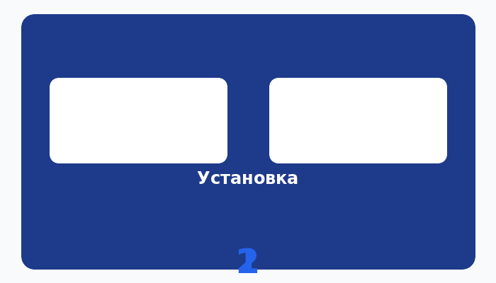
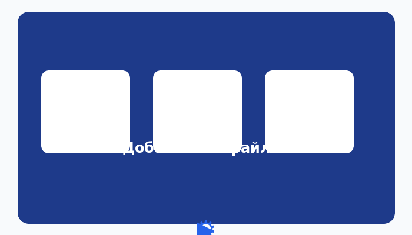
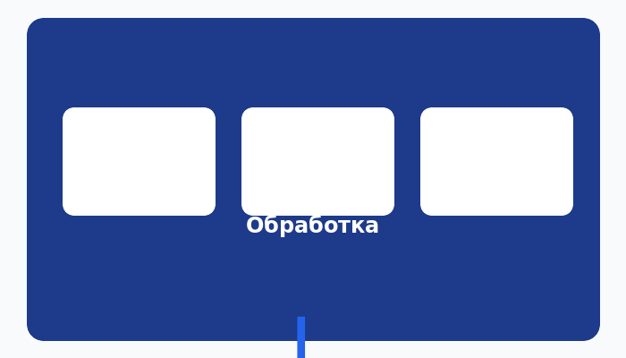
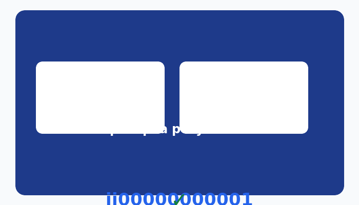
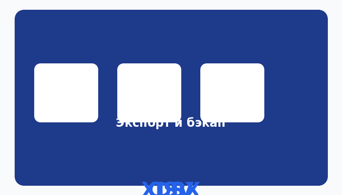

Руководство пользователя SHIRA MVP 2.0.0
Локальная программа для Windows: учёт этикеток, поиск QR/штрихкодов на кадрах видео, проверка и экспорт результатов.
1. Что такое SHIRA
SHIRA — программа для рабочего стола под Windows 10/11 x64. Она помогает:
- индексировать видеофайлы и выбирать кадры для анализа;
- находить этикетки с QR‑кодами и штрихкодами на кадрах;
- считывать идентификаторы (номера заказов) и привязывать их к таймкоду;
- вручную проверять найденные номера и экспортировать результат в CSV/XLSX;
- группировать фотографии по служебным разделителям и копировать/переносить с проверкой целостности.
Важно: программа работает офлайн на вашем компьютере. Результат распознавания требует ручной проверки — точность не 100 %, особенно на размытых или закрытых этикетках.
2. Установка и первый запуск
Установка состоит из двух шагов и не требует подключения к интернету.
01_INSTALL.cmd. Программа установит среду выполнения, Python 3.13.16 и создаст виртуальное окружение. Лог сохраняется в %LOCALAPPDATA%\SHIRA_MVP\installation-v2.log. Успешное завершение — exit 0 (SUCCESS).
02_START.cmd — откроется главное окно программы.

3. Главное окно и режимы работы
В верхней панели выберите режим обработки. Профиль и шаг сохраняются для каждого задания отдельно.
Короткая сессия
Видео < 3600 с. Равномерная выборка кадров, поиск кандидатов, ручное подтверждение.
Длительная сессия
Видео ≥ 3600 с. Интервальное индексирование, таймкоды, сводка наблюдений, извлечение кадра.
Фото
Группировка снимков по разделителям A/B, парковка неопознанных, копирование/перенос с проверкой SHA‑256.
4. Пошаговая работа с видео


5. Проверка и подтверждение номеров
Найденный идентификатор выводится на проверку с указанием таймкода и способа распознавания (QR / штрихкод / OCR). Оператор вручную подтверждает номер или отклоняет его.

6. Работа с фотографиями (режим «Фото»)
Добавьте папку со снимками. Программа распознаёт каждый фото и сортирует его:
- с текстом разделителя «A» — начинает группу А;
- с текстом разделителя «B» — начинает группу B;
- между разделителями накапливаются обычные фото;
- до первого разделителя и неясные снимки уходят в «Парковку».
После классификации просмотрите группы и нажмите «Копировать» или «Перенести». Каждый файл проверяется по SHA‑256 после копирования; при переносе источник удаляется только после подтверждённой копии. Все операции записываются в реестр photo-v2.sqlite3 — после сбоя continuation идёт без дублей и потерь.
7. Экспорт результатов и бэкап базы
- Экспорт: подтверждённые данные сохраняются в CSV или XLSX.
- Бэкап БД: создание резервной копии рабочей базы и импорт из неё.
- Проверка整体性:
06_VERIFY.cmdсверяет все файлы выпуска сSHA256SUMS.txt.

8. Пакетный режим (командная строка)
Для обработки без графического окна используйте 05_BATCH.cmd (app/cli.py):
Параметры: --mode short|long|photo, --profile, --step, --recursive, --op copy|move и другие.
9. Анимированный обзор workflow

10. Ограничения
- Целевая платформа — Windows 10/11 x64. Выполнение на целевой Windows в этой сборке не проверялось.
- Реальное 8‑часовое видео пользователя не загружалось; точность на реальных материалах не измеряется.
- Это не сертифицированная отказоустойчивая система.
- Руководство не раскрывает внутренние алгоритмы, регулярные выражения, схемы анализа и структуры баз.